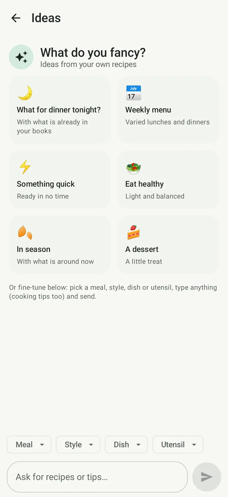

Assistant · Optional
A cooking assistant that uses your own key
Features marked with ✨ use artificial intelligence with the key you set up. You choose the provider and the model, and Miga only sends what each task needs.
Google GeminiAnthropic ClaudeOpenAIDeepSeekMistralGroqOpenRouter (free models)OpenAI-compatible (Ollama, LM Studio…)
Add several and they are used in your order: if one fails, the next one steps in.
- Recipes from photos and web pages: reads the text of a photo or a page and fills in the editor; from a web page it also polishes it. You review it before saving.
- Recipes from videos: if an Instagram reel or a YouTube video has no recipe in its text, it takes it from the video: what is said and, on YouTube with Gemini, what is written on screen.
- Improve recipes: one or many at once: better wording, tidy ingredients and times in bold. Nothing is saved without your say-so.
- Ideas: suggestions from your own recipes, weekly menus and answers about techniques, storage or substitutions.
- Health and nutrition: a rough health rating, calories and macros per serving, and ingredient substitutes.
- Keeps going when you leave: long tasks continue in the background with a notification that takes you to the result.
- Easy to set up: “Connect with OpenRouter” creates the key for you; for the others, “Get a key” and “Test connection”.
- Transparent: generated content is labelled and can be reported. With no key, nothing is sent.

New
Instagram and YouTube recipes, in your book
Saw a recipe in a reel or a video? Share it to Miga or paste its link and it's saved as just another recipe, with its photo and the author in the notes.
- No assistant needed: if the post's caption has the ingredients and steps, Miga reads them directly.
- Listens to the video ✨: if the caption has no recipe, the assistant listens to the video: Gemini hears the audio, and OpenAI, Groq or Mistral transcribe it. Check the quantities.
- From Instagram: tap Share on the reel, choose Miga and pick the book to save it in.
- The right photo: full size and without the video's play button.
- YouTube: the recipe in the description or on the author's website it links to; if it is not there, Gemini watches the video: what is said and what is written on screen.


Start your recipe book today
It lands on Google Play this Friday at 14:00 Spanish time, free for everyone. Create your first book and save that recipe everyone keeps asking for.
Miga is coming to Google Play
00days
00hours
00min
00sec
Friday 27 November · 14:00 Spanish time (13:00 UTC) · free
Now available on Google Play!
Google PlayFriday 14:00